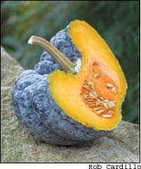
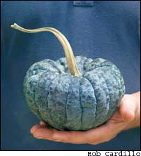
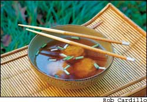

Imagine my surprise when I went into the garden this past August, and I found it littered with oddly shaped squash that resembled large chunks of hardened lava. Gray-black, other-worldly, yet hauntingly beautiful, this unique heirloom vegetable from Japan, the ‘Yokohama’ squash, was a visual study in the Japanese affection for serenity through form and texture.
Not only that, the ‘Yokohama’ possesses one of the most complex flavors I have run across in any squash or pumpkin I have grown. Everyone’s taste buds are different, but I detect hints of Asian pear, mango, avocado, lemon balsam, and if you have experience with tropical fruits, the unmistakable aroma of sapote. Can this be a squash? It is even a great boon to gardeners because it is highly resistant to borers and powdery mildew. Why didn’t I know about ‘Yokohama’ squash years ago?
This vegetable also comes with a historical pedigree hard to beat. In 1858, Japan signed treaties that opened settlement in Yokohama to foreigners, especially those who came to engage in commerce. According to Japanese food historian Shunro Kusama, Yokohama was the first place in Japan to experience the influence of Western food culture, especially after the establishment of Western-style hotels and restaurants during the 1860s. But Westerners also found evidence of much earlier outside contacts, not the least being tempura (batter-fried vegetables), a cooking technique taught to the Japanese by the Portuguese. The lingering Portuguese influence could also be seen in a number of vegetables introduced into the Japanese diet, including peppers, tomatoes and the famed ‘Yokohama’ squash.
The genetic origin of the squash traces to Central America, but over the centuries it underwent further development at the hands of Japanese gardeners. Today, several Yokohama-type squashes are known by distinctive local names in Japan. From a horticultural standpoint, it might be more accurate to say there is a Yokohama “group,” since the number of closely related varieties are many, and a few of them, like ‘Chirimen,’ are thought to be direct descendants of the same type of squash sent to the United States in 1862.
At the time of its reintroduction to the Americas, the ‘Yokohama’ squash caused a sensation, so its story is relatively well documented. While the United States was preoccupied with the Civil War at home, the big news from abroad was the new political opening of Japan, and American growers were quick to see the financial rewards of dipping into Japan’s rich botanical heritage.
The ‘Yokohama’ squash was introduced to American growers by James Hogg, a wealthy horticulturist who lived in the Yorkville section of New York City. Hogg’s brother was visiting Yokohama on business and sent him a number of unusual Japanese seeds. Hogg grew the plants in 1863, and The Magazine of Horticulture reported the results in March 1864, complete with detailed drawings of the mature fruit. Hogg named the squash in honor of its city of origin and declared it to be much superior to the ‘Hubbard,’ an heirloom squash still well known today. Hogg’s opinion may have been based on a number of factors, not the least being the extraordinary floral fragrance of the ‘Yokohama.’ But additionally, due to its smaller size, it is easier to store, and unlike the ‘Hubbard,’ it does not turn dry and pithy after prolonged storage. In fact, the flesh of the ‘Yokohama’ will remain velvety and moist for more than a year.
Unfortunately for the ‘Yokohama’ squash, its popularity lasted no more than 20 years at the most, for by the 1890s it more or less dropped out of commercial circulation. Hogg’s ‘Yokohama’ was much larger than the variety grown today, measuring about 8 inches in diameter and weighing from 6 to 8 pounds. Like its modern namesake, it was squat, heavily lobed and warty, the difference being its dark-green skin that ripened to orange. The present-day ‘Yokohama’ is about half that size, normally 6 inches in diameter, with dark gray-black skin that only changes to orange after prolonged storage.
I start my plants indoors in April and get them outside as soon as I can plant tomatoes. The exact planting time varies from year to year because it is a judgment call on the weather: Will it be a rainy, cool spring? If so, then I wait a bit. But it is better to get them in early because the stronger the plants become, the better they will resist beetle attacks in the summer. Plant three or four vines to a hill, and be certain to manure the hills generously (I used well-rotted horse manure). The vines require a lot of room, so space the hills about 6 feet apart, keeping in mind that by summer’s end the vines will be anywhere from 14 to 16 feet long. You can let them run over one another for better cross pollination, but I would not allow more than two squash to form on a vine at a time. The small, green squash that you pull off can be cooked like zucchini. You also can use the male flowers for stuffed squash blossoms.
If you harvest the fruit on a regular basis, it is possible to have vine-ripe squash from mid-August until frost. Stored in a cool, dry closet, the squash will keep like an acorn squash until the following spring.
Because of its unique shape, the ‘Yokohama’ squash can be sliced easily into thin segments, thus it is ideal for tempura and for cutting into ornamental shapes for such hearty winter preparations as oden (Japanese stew) or hot pot. Another excellent health-conscious serving idea is steamed dumplings because the rich flavors and texture of the ‘Yokohama’ do not get lost when played against the subtle complexities of classic Asian-style soup stocks. Typically, Japanese make their dumpling stock with dashi, a broth created with water, kombu (sea kelp) and dried bonito (a type of mackerel).ashi is so ubiquitous in Japanese cooking that it is possible to purchase it as an instant stock powder in many Asian food stores and markets. Other types of broth are prepared with stocks made of chicken, pork or duck.
The recipe below for squash dumplings is meant to serve as an outline for your own creative instincts. It employs duck stock, because this stock complements the flavor of the dumplings. Better yet, a few duck feet from an Asian butcher not only will enhance the taste, they also will give the stock more body and what chefs refer to as better “mouth feel” (in this case a velvety quality). Not the least, duck stock also offers an opportunity to experiment with the range of distinctive flavors available from heirloom duck breeds, a branch of cookery that is only now beginning to come into its own. Of course, if duck is not available, you can make the stock with chicken, or from anything that suits your taste.
The delicious ‘Yokohama’ squash is very rare. As best we can determine, the only commercial mail-order company you can order seeds from is Baker Creek Heirloom Seeds. Only one member of Seed Savers Exchange (SSE), Decorah, Iowa, offers it in the 2004 SSE Yearbook, which lists hundreds of heirloom vegetable varieties offered by members.
If you want to save ‘Yokohama’ seeds for yourself and to pass them on to other gardeners, you should not have other members of the same species (Cucurbita moschata) growing in your garden or even nearby. To insure that you have the very best germination rates, let the squash ripen on the vine to the point that the stem is dry. Select only the best looking or most typical specimens for seeds. Then set aside the seed squash in a pantry and let them age for a month or so (the skin may turn orange), then remove the seeds and use the squash flesh in your favorite squash recipe.
Wash the seeds in a strainer or colander to remove all of the placenta (the membrane in which the seeds form). Spread the seeds on a screen to dry in a cool, airy room away from direct sunlight. Let the seeds dry until they snap when broken in half, then store them in an airtight jar in a dark, dry closet. The seeds will remain good for four to six years. You also can freeze the seed in an airtight jar. This will prolong viability for as much as 15 to 20 years, but it is better to renew your seed supply every six years.
This makes a nice starter course, but it can become a full meal if you decide to make a large batch of the dumplings.epending on the size of your steamer, you may need to make the dumplings in two batches, but that is OK, because you can cover and set the cooked ones aside without harming the texture. Just reheat in a microwave for about 1 minute. And don’t forget to have the duck stock ready. It should be boiling while you are making the dumplings; or microwave it if you made it ahead and want to reheat it right before serving.
Yield: 16 to 18 dumplings (serves 4 to 6)
1 pound pared, seeded squash
1 tablespoon reduced-sodium
soy sauce
1 tablespoon grated ginger root
1 teaspoon dark sesame oil
6 tablespoons plain bread crumbs
1 whole egg, well-beaten
4 tablespoons rice flour (or use cornstarch)
1 tablespoon sesame seeds
3 quarts duck stock
chopped spring onions
Steam the squash in a vegetable steamer for 20 minutes, or until soft. Remove and purée. Add the soy sauce, ginger, sesame oil, bread crumbs and beaten egg. Thicken the batter with the rice flour and add the sesame seeds. Set aside to recover for about 25 minutes so that the batter stiffens slightly.
Grease the bottom of the vegetable steamer with sesame oil and add heaping tablespoon scoops of the batter spaced evenly about a half inch apart. Cover and steam 20 minutes, or until tested with a toothpick and the centers are dry. To serve, put three dumplings in a small bowl and add hot duck stock to cover. Garnish with chopped spring onions.
This recipe was tested with a breed of duck known as Ancona, named after a port town on the Adriatic Coast of Italy.uck seems to complement the sweetness of the ‘Yokohama’ squash.
Yield: 3 quarts (3 liters)
1 duck carcass
half an onion several pieces of daikon (white Japanese radish) or any large, white radish, cut into irregular pieces a small piece of pared ginger root a few leaves of komatsuna (a mild mustard green) or collards
2 or 3 pieces of kombu (sea kelp; optional; see note below)
4 to 6 duck feet (optional)
½ cup (125 milliliters) low sodium soy sauce, or to taste
½ cup (125 milliliters) Chinese cooking wine (optional)
Break up the carcass into pieces and add them, together with the onion, ginger, daikon, collards, kelp and duck feet to 4 quarts (4 liters) of boiling water. Simmer gently for about 1 hour or until reduced by a quarter. Strain, season with the soy sauce and cooking wine, and reserve until needed.
Note: You can order kombu or dried bonito from Eden Foods of Clinton, Mich. Call (888) 441-3336 or visit the Web site for ordering information.
Great food satisfies our souls like nothing else, but many of us are dependent upon the modern food system, which provides relatively few, and often less flavorful, choices. Often we are unaware of many food crops and particular varieties that deserve to be more widely known and grown because of their exceptional flavor.
To help you discover how great your food can really taste, we are very pleased to announce a new Kitchen Garden department, written by heirloom foods expert William Woys Weaver of Devon, Pa.
Weaver is the author of numerous books about the history of food, gardening and cooking, including Heirloom Vegetable Gardening and 100 Vegetables and Where they Came From. He recently was associate editor and art editor for Scribner’s newly published, award-winning reference Encyclopedia of Food and Culture.
Heirloom Vegetable Gardening: A Master Gardener’s Guide to Planting, Seed Saving and Cultural History by William Woys Weaver, now on CD. If you want to explore the fabulous flavors, fascinating history and amazing diversity of vegetables, this is the book to start with. Food historian and Mother Earth contributing editor Will Weaver profiles 280 heirloom varieties, with authoritative growing advice and incredible recipes. First published in 1997, Heirloom Vegetable Gardening has since been out of print, with used copies selling online for as much as $300. We are proud to present the original text, with color photos, as a digital book on CD-ROM. Order now.
|
 ROB CARDILLO Yokohama squash |
 ROB CARDILLO Yokohama squash |
 ROB CARDILLO Yokohama squash dumplings in duck stock. |
|
ROB CARDILLO Heirloom expert William Woys Weaver in his Devon, Pennsylvania garden |
|
|